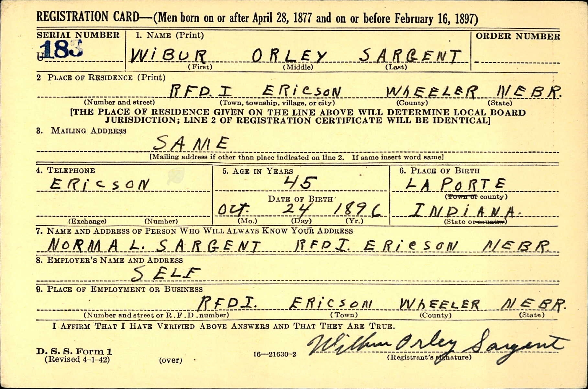
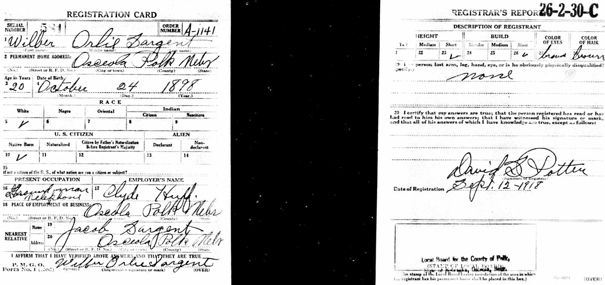
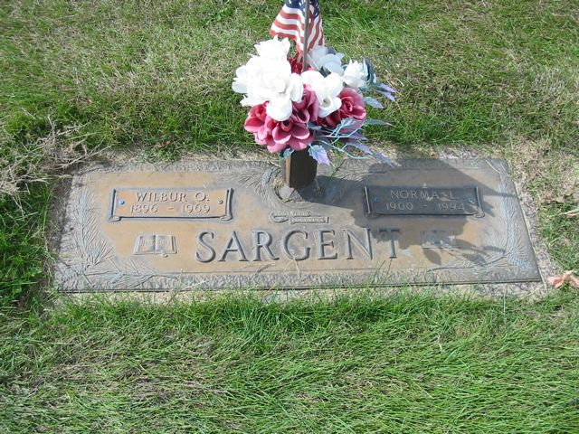
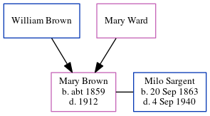

Wilbur Orllie Sargent 1896 - 1969
[ Home ] | [ Calendar ] | [ Surnames Index ] | [ Errors ] | [ Family History ]A farmer and the child of Jacob Sargent and Alice Bellmore, Wilbur Sargent, the third cousin three-times-removed on the mother's side of Nigel Horne, was born in La Porte, Indiana, USA on 24 Oct 18961,2,3,4,5 and married Norma Zollars (with whom he had 6 children: Mardell DeVern, Donna Elaine, Norma M, Wilfreda, Roberta and Dwayne, along with 2 surviving children) in Council Bluffs, Pottawattamie, Iowa, USA on 12 Nov 19246.
During his life, he was living in Osceola, Polk, Nebraska, USA on 1 Apr 19308; and in Ericson, Wheeler, Nebraska on 1 Apr 19407 and in 1942. He served in the military from 1917 to 1918 (world War I Draft Registration Cards).
He died on 26 Aug 1969 in Grand Island, Hall, Nebraska2,3,4 and was buried there at Westlawn Memorial Cemetery after 26 Aug 19692.
Parents
- Jacob was born on 18 Feb 1856
- Alice Josephine was born on 24 Jan 1862
Children
- Mardell DeVern was born on 26 Feb 1925
- Donna Elaine was born on 27 Jan 1927
Citations
- Social Security Death Index - Findmypast
- U.S., Find A Grave Index, 1600s-Current Ancestry.com Operations, Inc.
- United States Billion Graves index - Findmypast
- United States Obituary Notices - Findmypast
- World War I Draft Registration Cards - Findmypast
- United States Marriages - Findmypast
- US Census 1940 - Findmypast (was age 41 and the head of the household)
- US Census 1930 - Findmypast (was age 32 and the head of the household)
Media
Wilbur Sargent - 1930 Census

Wilbur Sargent - WW2 draft

Wilbur Sargent - Norma Zollars - marriage certific

Wilbur Sargent - WWI draft

Wilbur Sargent - 1910 Census

Wilbur Sargent - Norma Zollars - gravestone

United States Marriages - US/FS/M/006771113/1
Social Security Death Index - USBMD/SSDI/506203501
US Census 1940 - USC/1940/1476442446
United States Billion Graves index - US/BMD/BILLION/023760259
World War I Draft Registration Cards - USM/WWIDR/1757192726
United States Marriages - R_321361153/1
United States Obituary Notices - US/TRIB/064061455
Family Tree
Map
Generated by ged2site. Last updated on Jul 3, 2024
Known Issues
Residence record for 1942 contains no citation
Listed in the residence for 1942, but spouse Norma Zollars is not
No records of living with anyone
Adding date of burial as 'aft 26 Aug 1969'
Location for "military service" on 1917-1918 is empty